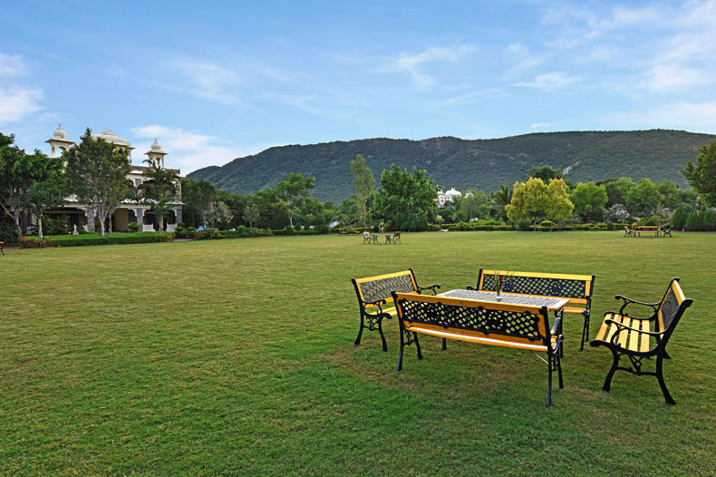

<div class="container project-view">
   <div class="row">
      <div class="col-md-8 project-images">
         
         
         
         
         
         
      </div>
      <div class="col-md-4">
         <div class="project-info">
            <h2>Udai Bagh</h2>
            <div class="details">
               <div class="info-text">
                  <span class="title">Location</span>
                  <span class="val">Udaipur, Rajasthan</span>
               </div>
               <div class="info-text">
                  <span class="title">Category</span>
                  <span class="val">Luxury Wedding</span>
               </div>
            </div>
				Have you ever romanticized with a city because of the wonderful experiences that are beyond interpretation ? 
				The Udai Bagh at Udaipur creates an awe for its guests making it an unmissable experience. 
				<br/><br/>
				Known to be one of the top 10 resorts in Udaipur, this royal edifice is set in the foothills of Aravalli Hills, giving you a breath-taking view as far your eyes can look.
				<br/><br/>
				A royal escapade in this city of lakes gives every bit of your stay-cation a feel of royalty soaked in luxury. 
				Bridging the gap between the glorious regal past and the contemporary presence, every corner of The Udai Bagh is a delight of Rajasthani culture. 
				Explore the city and its rich heritage while you stay at one of the best resorts in Udaipur.
				<br/><br/>
				Staying at The Udai Bagh is so magical in its inherent simplicity, so nonchalantly chic in its architecture, that it makes it special in many ways. 
				The space in the hotel whether it is the façade, the rooms or gathering spaces, it only speaks in delicate nuances of colour, texture and design clarity.
				<br/><br/>
				Step in one of the most talked heritage hotels in Udaipur and The Udai Bagh will surprise you with delights that make you happy.         
		</div>
      </div>
   </div>
</div>